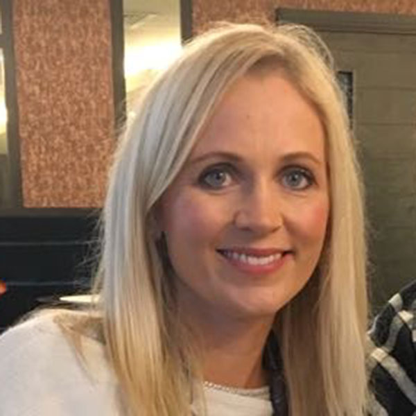

Independent speech & language therapy
Helping every child find their voice
Friendly, one-to-one speech and language therapy for pre-school and school-aged children across Northern Ireland — with a free initial chat to talk things through, no referral needed.
Prefer to talk now? Call 07779 619417
Areas I can help with
Support for a wide range of communication needs
If something about your child’s talking or understanding is worrying you, it’s worth a conversation. I regularly work with children who have:
- Late talking
- Language delay & disorder
- Speech sound difficulties
- Verbal dyspraxia
- Developmental language disorder
- Global developmental delay
- Attention & listening
- Autism-related communication
- Stammering
Services
Ways we can work together
Free initial consultation
A no-obligation phone or video chat to talk through your concerns and decide if an assessment would help.
Learn more →Assessment & report
A thorough, play-based assessment (around an hour) with clear feedback and an optional written diagnostic report.
Learn more →Therapy sessions
Regular one-to-one or small-group sessions at home, at nursery or school — playful, practical and paced to suit your child.
Learn more →What to expect
Getting started is simple
-
Get in touch
Call, email or use the contact form. We’ll arrange a free consultation at a time that works for you.
-
Assessment
A relaxed, play-based session to understand your child’s strengths and where they need support.
-
A plan that fits
You’ll get clear feedback, realistic goals and a therapy plan built around your family’s routine.
-
Therapy & review
Regular sessions with activities to try at home, plus review appointments to track progress together.

About the therapist
Hi, I’m Shirley-Ann Dickey
I’m a paediatric speech and language therapist with NHS experience since 2004 and my own independent practice since 2012. I’m registered with the Royal College of Speech and Language Therapists (MRCSLT) and HCPC, and trained in Makaton, the Hanen Programme, PECS and TEACCH.
My approach is warm, practical and family-centred. I take time to get to know each child, work closely with parents and carers, and liaise with nurseries, schools and other professionals so everyone is pulling in the same direction.
More about meWorried about your child’s communication?
The first conversation is free and there’s no referral needed. Let’s talk it through.